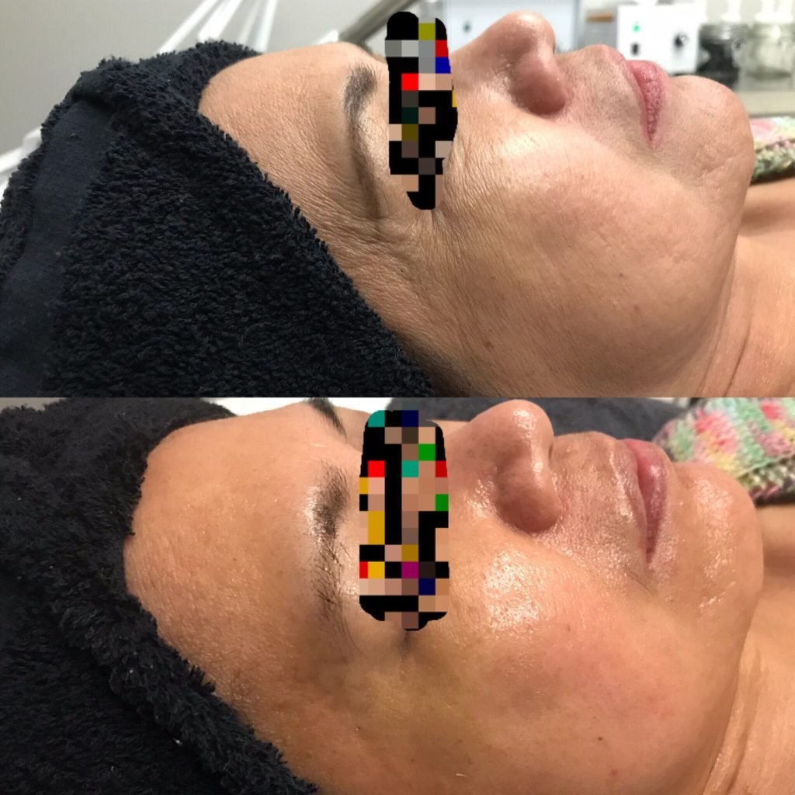
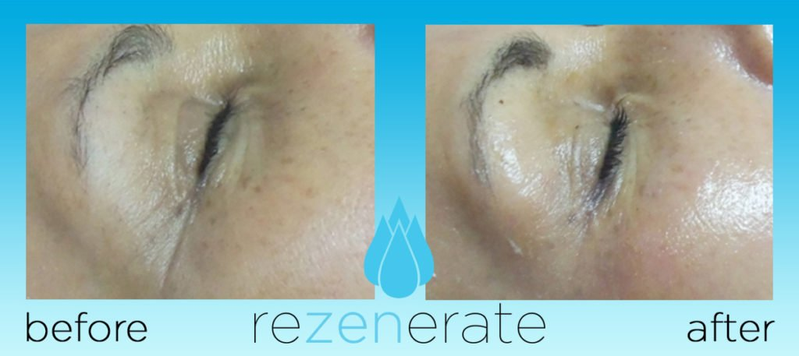
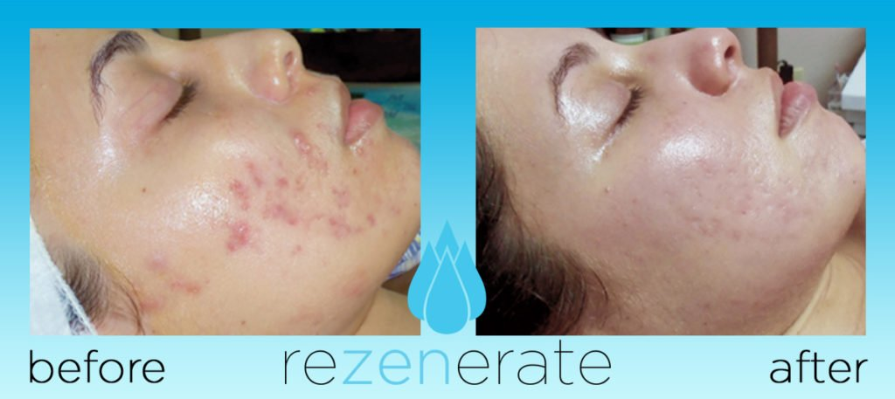
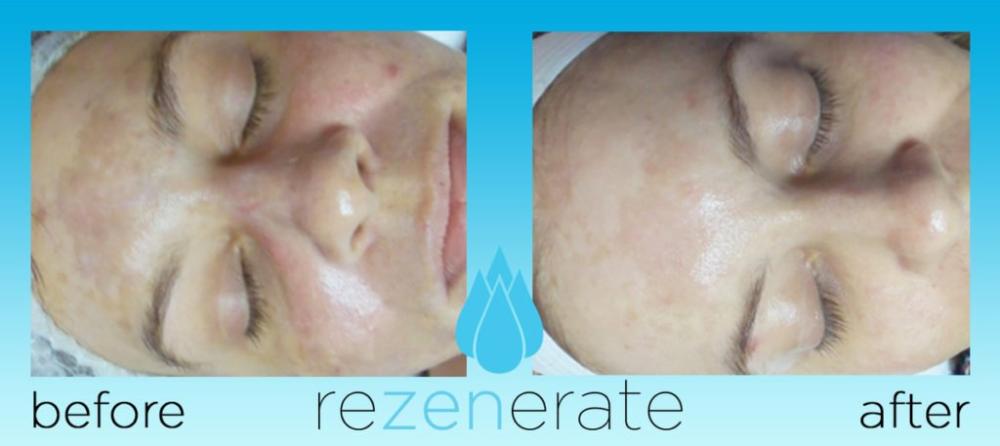

2019 is the Year of the Rezenerate Nanofacial
Hadiyah Daché, licensed cosmetologist & esthetician
Facials & Treatments
3 min
← All articlesThe Book →Friendly reminder: this post contains affiliate links, which help support the Glowdega Archive. If you buy through them, I may earn a commission at no extra cost to you.
Every year there is some new "it" treatment in beauty. The "Game of Thrones" facial, the Hydrafacial, Microneedling, Dermaplaning... these are all great skin care treatments that have had their moments. These often pricey treatments come on the recommendations of celebrities, beauty editors and the everyday influencers who want to be celebrities and beauty editors. It seems like many people will go out of their way to try the hottest, new skin care treatments at least once. But, unfortunately, treatments like these come at premium prices that can range anywhere from $250-$500 per session. So while most are willing to try at least once, they don't get the full benefit of the treatments that require a series of at least 3 repeated sessions to achieve desired results.
Luckily, there's a new "it" treatment in town and it's affordable for everyone. Meet Rezenerate.
What Is Rezenerate?
The Rezenerate wand is a nano skin care device on the market for estheticians and the creator of the nanofacial. It is also sometimes referred to as "Microchanneling". This state-of-the-art precision cosmetic tool is only available to professional estheticians, and allows us to infuse serums at a higher rate of absorption than your everyday topical application. While most daily serums are absorbed anywhere between 2%-10%, during a Rezenerate treatment, serums are absorbed between 40%-50%. This provides clients immediate results with no downtime. From the website:
Rezenerate acts as an infusion catalyst, assisting the products and serums you are already using on your clients’ various skin issues. Rezenerate utilizes the breakthrough science of Nano-Technology, the pressure points of Acupressure, principles of Yoga facial exercises, and the cool touch of Cryo Cold Therapy and our series of proprietary processes to create what we have dubbed the “Rezenerate Nano-Tech Golden Ratio.”
Who Should Get a Rezenerate Facial?
The Rezenerate nanofacial is perfect for clients who want to resolve fine lines and wrinkles (especially around the eyes, 11 lines, and smile lines), hyperpigmentation, and excessive dryness. At FAIRY GLOW MOTHER, I recommend the Rezenerate treatment most for those with hyperpigmentation, acne scarring, and wrinkled or sagging skin. For those who don't have any of those issues but absolutely must try it, you will notice intense hydration in the skin almost immediately but it may not be something that is picked up on before and after photos.
Before & After Rezenerate Treatments
The first photo is one of the before and afters taken at FAIRY GLOW MOTHER (the top photo is before, bottom photo is after). The remaining are before and afters from other Rezenerate providers across the country.
-

-

-

-

How Often Should I Get a Rezenerate Nanofacial?
This is where me and the Rezenerate website differ. They recommend getting a Rezenerate nanofacial every 7-14 days. That's a bit excessive. I recommend that most clients come in once a month for a Rezenerate treatment. For clients within the Glow End Theory (Oily Skin Program), Moisture Madness(Dry Skin Program), or Balance the Looks(Combination Skin Program), they may receive up to 3 Rezenerate treatments every 2 weeks, depending on their skin's performance.
How Much Does a Rezenerate Nanofacial Cost?
The best part is the cost! The most expensive I've seen services listed at is $195. The average price range however is between $125-$175.
I'm Ready to Book my Rezenerate Nanofacial today!
Perfect! There are several ways to book a Rezenerate treatment at FAIRY GLOW MOTHER currently. I'm currently offering two Rezenerate Anti-Aging facials via Groupon (one 60-minute treatment and one 90-minute treatment). You can book those here.
Once that Groupon expires, you can book the Rezenerate treatment through one of my 90-day skin type programs, the Glory Hyperpigmentation Facial or the Glow Gracefully Anti-Aging Facial. Click here to book your service today!